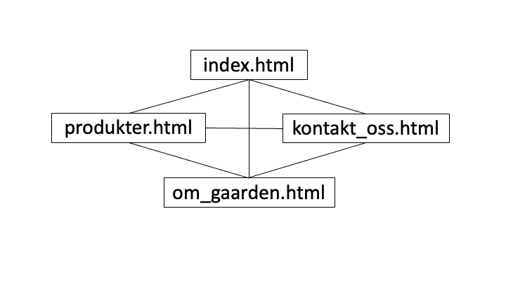

Navn: Håvard Nybøe, Daniel King, Preben Johnsen, Mikkel Emil Lange Friis, Karen Bakke
Dato: 06.10.21
Einar Johan Bondahl og Irene Bondahl er de som driver gården og selger ved, honning og bær.
Mening med nettsiden er å spre informasjon om slag av produktene fra Bettum gård. Målet er en estetisk og brukervennelig nettside som fanger oppmerksomheten til målgruppen, og gjør det enklere for Irene og Einar Johan Bondal å selge produktene sine. Publikumet vi ønsker å nå og lager nettsiden til er mennesker som er opptatt av å vite hvor maten deres kommer fra, og hvordan den er produsert. Av den grunn anser vi målgruppen i hovedsak som mennesker som er etablerte, dette er fordi det oftere er både dyrere og mer tidkrevende å handle på denne måten.
Navigasjonstrukturen av Bettum gård sin nettside er forholdsvis enkel fordi den kun består av fire sider. Som vist på figuren under. Kunden ønsker en oversiktlig nettside, og har generellt få produkter til salg. Derfor har vi gått for en struktur som gjør at brukeren kan, via navbaren, få tilgang til alle nettsidens sider ved hjelp av kun ett klikk. Siden det er såpass liten bedrift så er det ikke hensiktsmessig å lage fler sider enn vi har gjort. Navbaren gjør strukturen enkel og brukervennlig å ta i bruk. Fordi det er så få sider vil strukturen hverken være lineær eller følge et hierarki. Så det blir vanskelig å definere den nøyaktig.
Vi skal dekke kravet til JavaScript ved å implementere disse funksjonene:
| Filnavn | Forklaring | Ansvar | Frist |
|---|---|---|---|
| index.html | Forsiden | Mikkel | 03.11.21 |
| tjenester.html | En oversikt over hvilke tjenester Bettum gård tilbyr. | Preben | 03.11.21 |
| om_gaarden.html | Litt info om Bettum gård. Bilder for å vise frem gården og omgivelsene produktene kommer i fra. | Karen | 03.11.21 |
| kontakt_oss.html | Hvordan man kommer i kontakt med Bettum gård, hvor den ligger, kontakt/bestillingsskjema. | Daniel | 03.11.21 |
| images/ | Mappe med bilder. Sørge for at alle bildene har lett forsåelige navn. Sørge for at bildene er i et forsvarlig format, og av ikke for høy kvalitet. | Karen | 24.10.21 |
| navbar.js | Script for å tilordne en navigasjonsbar som holder seg lik på alle nettstedets sider, og som kan ta deg til alle de ulike sidene. | Preben | 03.11.21 |
| footer.js | Script for å tilordne en footer som holder seg lik på alle nettstedets sider. | Håvard | 03.11.21 |
| form_validation.js | Script for å validere kontaktskjemaet så brukeren ikke fyller inn feil informasjon i feltene. | Håvard | 03.11.21 |
| bildekarusell.js | Script for en bildekarusell som viser bilder av Bettum gård, og ting på gården. | Mikkel | 03.11.21 |
| styling.css | Et styling dokument som dekker alle html sidene. | Håvard | 03.11.21 |
| Finpuss | Sjekke hele nettstedet, validere alle html, css (og js filer??). | Alle | 07.11.21 |
| Levere | Sørge for at mappen med samtlige filer blir levert på blackboard og nettsiden lastet opp. | Alle | 11.11.21 |